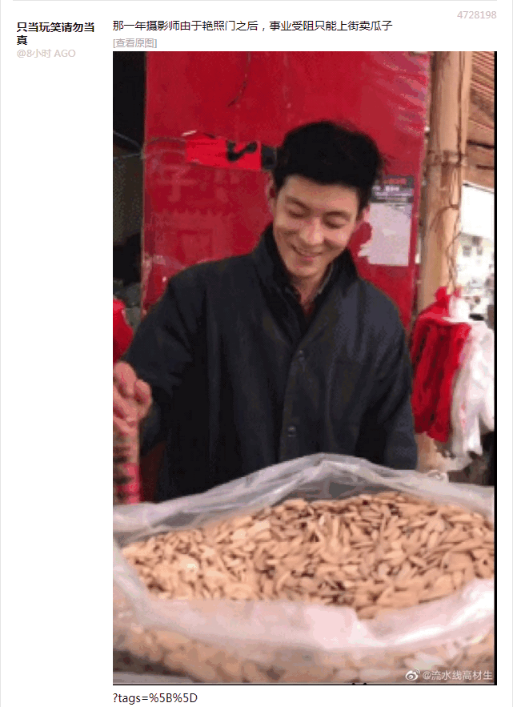

刚补完了题外话〔107〕，其中提到的毕达哥拉斯祖坟被刨相关新闻，可以作为忒休斯之贼船的又一条素材。祖籍萨摩斯岛的毕达哥拉斯不远千里跑到南意大利开枝散叶，可以类比后来基督教的传播过程，巴尔干半岛之上有一条拉丁/希腊分界线，把南斯拉夫一分为二。
简单说，君士坦丁堡牧首聂斯托利（386－451），与亚历山大港牧首基里尔（376－444）之间的冲突，可以认为是文化背景不同所导致的。聂斯托利是出生于叙利亚的日耳曼尼西的波斯人，接受的是希腊化教育，可以类比「民人」；而基里尔是在埃及当地出生的罗马人，从小在拉丁社区中成长，可以类比我中华兲朝上国各大城市的「满城」当中的「旗人」。
众所周知公元476年西罗马帝国灭亡，之前这段扯皮是前奏，正如同国际一流和谐宜居之都「高学历精英社交圈」正在首页今日头条位置醒目应景推荐的重要情报所展现的那样：

请配合国际化大都市「华语第一精日论坛」出现的重要情报一起理解：
有哪些作品的主题或结局是停留甚至倒退的五中全会开完，惯用语「砥砺奋进七八年来」就该与时俱进为「砥砺奋进八年来」了也，输入法惯用词条当中现在「五六七八」都有，赶紧删掉落后于时代的历史唯物主义の尘埃，旧的不去新的不来，万恶的旧社会不落幕，百善の新石器时代不会开张吖。
然后要注意到一些「对仗」，首先是亚历山大港与君士坦丁堡，人名分别是希腊/拉丁人，但地点之拉丁/希腊化倾向刚好相反；而拉丁人使用的人名Cyrillus
则是进口的希腊人名Κύριλλος
，而市面上知名度最高的向斯拉夫人传教并发明了格拉哥里字母的基里尔则是生于希腊的原名君士坦丁的「旗人」去罗马出家时获得的法号。
所以，这「彼罗马兲朝上国」的往事，在本土化的时候用「我大清」类比，简直壹壹对应。
然后再来回顾伪装成意识形态斗争的政治斗争，导火索是安条克方面不愿意将马莉娅称呼为「王母娘娘」，导致教中央勃然大怒。至于为什么，以前不惮以最大的恶意揣测过了，希伯来太君认为耶少爷是「旗人」或「民人」的私生子，虽然按照母系传承捏着鼻子鉴定为同胞，但就是不待见，尤其是不承认其弥赛亚职称。而保罗在传教的时候，掺和了大批三洲通衢民间传说，尤其是希腊神话，把耶少爷包装成民族大融合的象征，这才能深入基层。
在《异闻录》那边说过了，我中华兲朝上国「本土化」传教可以做到人民群众喜闻乐见的程度：「“听起来耶老爷它们家怎么那么像玉皇大帝和王母娘娘呢？”，柴禾妞想起市面上基督徒深入基层专挑老头老太太接地气的传授希伯来革命理论时候的胡说八道，“还有说是牛魔王、铁扇公主和玉面狐狸的，红孩儿被疙瘩头指使阴阳人逮走之后，然后庶出的洪秀全没来及接班就被嫡母打落凡间”」。
所以，希腊特色的「半神」职称就这么掺和进来了。而罗马特色的户籍管理制度强调，父母双方都是罗马公民，孩子才是罗马公民，执行中与我中华兲朝上国「新生儿随母落户」一样。并且「旗人」动辄在斗兽场召开无遮大会，一边看着底下奴才们厮杀，一边为爱鼓掌。于是八旗子弟下凡的时候通常是在妇产科监护室摆成一溜，外面的接盘侠排队进门，看着谁长得像自己①就抱起来拎回家，这种「把绿帽举高高」的传统风俗习惯延续至今，比如盎语raise
一词就有「抚养」的含义。
也就是说，彼罗马天朝上国在君士坦丁决定改信基督教并册封国师的时候，强调过宗人府档案管理原则之基本国策，神棍满口答应下来。这是「旗人」单方面的决定，没有征求「民人」意见。
并且，马莉娅「蒙召升天」是各派别都承认的教义，说耶老爷拔屌无情也就罢了，我大清罗马以孝治天下，耶少爷完成了「主人的任务」回天堂述职了，怎么能放着太后不管呢？
这就是耶老爷、马莉娅并称「二圣」的典故，在本土化的时候用「我大唐」类比，简直壹壹对应。
总之，亚历山大港的基里尔死得早，聂斯托利一直抗争到最后，直到以弗所的三届四中全会，罗马中央都没能摆平安条克。
现在的情况，是1994年11月11日梵蒂冈撤销将聂斯托利开除出教的决定，在那之前就有理性客观公正中立的学术观点，认为安条克方面近水楼台先得月向阳花木早逢春，当年可能拥有一些早期的教会机密兼宇宙奥秘，于是聂斯托利对教义的理解接近正统的基督论观点。
于是这些本位面历史就可以挪用了，设定中的「正统基督论」是建立在数学基础之上的。这里接着前一篇注释的结尾，略作展开。
简单说，在《恶补记》当中提到了，我是运用「不可测集及其补集无休止纠缠在一起」的数学结论，解读「耶少爷身上神人二性不混合不改变不分割不分离」的当代正统教义，这还是在实分析的范畴之内，但是走毕达哥拉斯路线的当权派不承认实数就无法接受。
而前一篇注释结尾当中提到准备安排聂斯脱利派乃至琐罗亚斯德教在复分析范围内发展「经院数学」，对三位一体的具体解读还没想好，或者说恶补计划没有变化快。连载当时仅仅是有个「物质脱实向虚」的脑洞，认为是神术与法术巫术的共同基础，还可以与正文中已经出现的「法师密室」「德鲁伊障眼法」之类描写结合起来。
所以就与第一篇设定当中提到的「影魔网」联系起来了，还在注释中反复强调卡壳世界的数学作为超自然力量的基础一定会被学阀垄断，以及各个阵营乃至同一阵营内各个派别互相藏着掖着进行军备竞赛，暗地里根据不同假设得出不同结论。
然后，迦克墩公会议之上抡板凳搞民主，把宣称「耶少爷不是人，天外飞仙下凡尘」之类基督一性论的派阀都开除出教了，在与安条克牧首座堂的斗争胜利之后刚高兴没多久的亚历山大港牧首座堂发现这次轮到自己了，这时候才领悟到唇亡齿寒的道理并看透罗马中央假途灭虢的阴谋诡计，已经来不及了。
在从「洗完澡了精神抖擞容光焕发」到「三拨衣物洗净晾好」这段时间内，上网乱转没发现什么重要情报。然后想起前几天在九省通衢の煎蛋看到的不甚重要的情报《新几内亚跳大神》了也：
类似的巫术型民间信仰在全球范围内遍地都是，设定当中都与道教和印度教一个待遇，按照「异教」处理。但是呢，由于「异端比异教更可恶」的普世价值，无论是梵蒂冈还是麦加，都会在一定时间一定范围建立各种各样的「战略协作伙伴关系」，达成战略甚至战术目的之后就一刀两断，好比渎圣同盟那样。
具体到我中华兲朝上国，这一套传统风俗习惯就是「傩」，简单说就是「戴着面具载歌载舞」，科技昌明民智大开之后逐步从宗教仪式变成文艺演出，如今还作为非物质文化遗产传承的，除了境内犄角旮旯的杂胡野种之外，就是东洋扶桑瑞穗国的「能剧」。想必国际化大都市「华语第一精日论坛」的娱乐至死の色目逗哔对此如数家珍。
与《设定集》有关的内容，是古希腊戏剧。早期只有一个演员，手持各种面具出场，一身分饰多角念台词，没有对话。中期演员可以与伴奏乐队领班对话，后期才有多个演员同时出场。所以，设定异教当中部分文艺工作者混进娱乐圈当中，于是无论是「巴蜀变脸」还是「京剧脸谱」都能影射，各种面具当然也会有。
刚爬起来酒劲还在头昏脑胀，上网乱转发现色目情报掮客正在推送「中国将从坦桑尼亚进口大豆」的情报。
然后就想起坦桑尼亚的词源，乃坦噶尼喀与桑给巴尔合称的缩写，在《设定集》当中修辞为「大坦噶尼喀及桑给巴尔联合苏丹国」，架空历史安排为阿拉伯太君为了便于贩毒奴而授权希伯来太君成立「坦噶尼喀桑给巴尔银行」（TZBC
），再然后这个金融机构「实体化」，就能串联大批剧情。
当然影射现实还需要一些情报，比方说到现在都不知道「贩卖人口」的外挂被授予了哪个「冒险者团队」，背后有哪些金主撑腰。
截止到现在，架空当中幕后黑手建立的洗钱专用金融机构已经有仨了：
- MSBC: 莫斯塔尔萨拉热窝银行
- BSBC: 巴库索契银行
- TZBC: 坦噶尼喀桑给巴尔银行
分别造就了「南斯拉夫首富」「高加索首富」「班图首富」，都是希伯来太君，设定为分属「消失的十支派」当中的三个，各自都把持着一万两千张诺亚方舟船票分配权。
举一反三触类旁通，除了没消失的犹大、便雅悯俩支派之外，还剩下七个支派。
注意教义规定希伯来太君可以喝酒，除了承担祭祀任务的利未支派之外。于是可以设定混入阿拉伯太君当中建立绿教，并在抱残守缺的同时与时俱进，勒令不许喝酒但是可以吃骆驼的希伯来太君，是利未支派。
还剩下六个，希望色目情报掮客再接再厉，继续提供国家机密兼宇宙奥秘。
没发现色目情报掮客提供什么重要情报，剩下六乘以一万两千张船票的去向暂且搁置。其它情报也没发现多少，简单扯淡几句结束本篇注释。
长话短说，本位面历史当中的「条顿骑士团世俗化」与卡壳世界架空历史当中的「坦桑银行实体化」也是工整的对仗。骑士团这种军事修会可以类比各国「东印度公司」之类殖民机构，成员不允许拥有私人财产，就是「献了青春献终身，献了终身无子孙，遗物收归党有，棺材上盖一块画着啥的抹布就算打发」的政治规矩和组织纪律。而希伯来太君时刻牢记党的教导「多多生养遍布大地」，怎么可能禁欲独身呢？
这还是因为班图太君费拉不堪的缘故，首富放话「爷有得是钱」从指头缝里漏出点残羹剩饭，立刻乌央乌央的大批武德屁颠屁颠蜂拥而至，甚至「有钱能使（黑）鬼推磨」，抢滩登陆随便放几枪，就可以跑马圈地了也。反之，在「巴尔干火药桶」「高加索火药桶」那边，希伯来太君就选择把「巴别塔计划」贯彻落实到底，多方下注左右逢源的同时多方围堵两面夹攻躺着收租国安民乐岂不美哉，相比之下「实体化」亲自坐江山的风险太大划不来。
对应现实局势，「希帕索斯永垂不朽」的中心思想差不多已经不证自明了，相关内容不再重复，继续夯实数学基础的工作放在《恶补记》那边。而「人类群星闪耀时」的主要内容，还有很多线索没有捋清。这些工作还是先在《异闻录》那边根据现实局势不惮以最大的恶意揣测之后，再挪用过来「艺术来源于生活又高于生活」吧。
接下来《设定集》这边的重点，就是继续丰富背景，卡壳世界要做到与本位面「几乎处处一致」还有很多细节需要完善。
- ①
